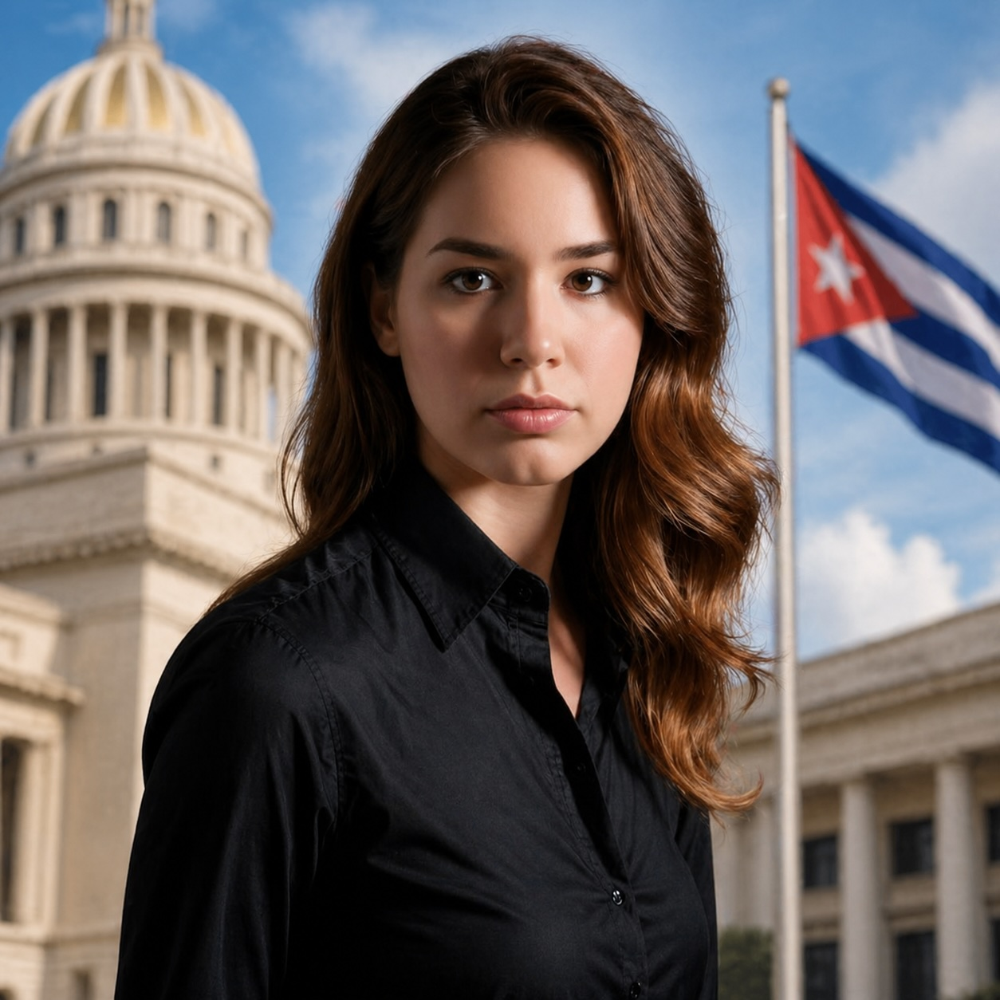
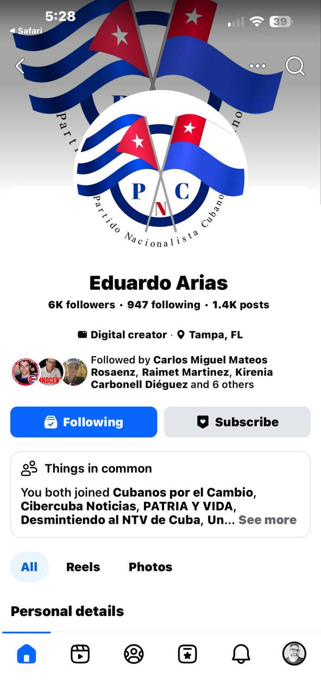
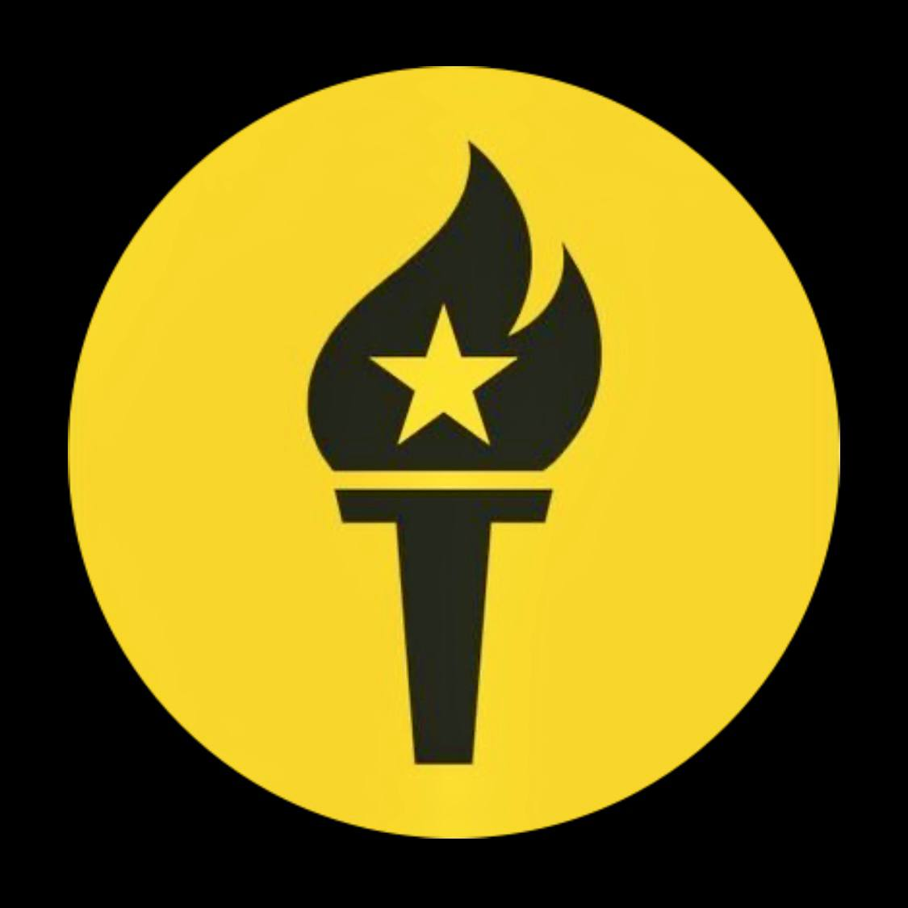

¿Eres un candidato declarado?
Si has anunciado públicamente tu intención de postularte a la presidencia de Cuba en un escenario de transición democrática, puedes solicitar tu inclusión en este registro y someter tu plataforma completa para evaluación ciudadana.
Salvedad importante: la presidencia, vocería o representación de un partido no equivale automáticamente a una candidatura presidencial.
Un partido puede tener presidente, coordinador nacional, representante o portavoz sin haber presentado todavía un candidato a la presidencia de Cuba. ENTRE TODOS debe distinguir ambos planos con claridad: ficha de partido por un lado y ficha de candidatura presidencial por otro.

Cuba no tiene elecciones libres. Cualquier candidatura declarada hoy opera en un escenario hipotético de transición democrática — no en un proceso electoral formal. ENTRE TODOS documenta estas declaraciones porque forman parte del debate político real y merecen ser evaluadas por la ciudadanía con los mismos criterios que cualquier propuesta de gobierno.
Distinción básica: presidir o representar un partido no convierte por sí mismo a esa persona en candidato presidencial. La candidatura presidencial requiere una declaración, nominación o formulación específica y separada.
El registro en esta página no equivale a reconocimiento, legitimación ni apoyo por parte de ENTRE TODOS. Cualquier candidato declarado puede someter su plataforma completa para que sea organizada por categorías temáticas y evaluada punto por punto por la ciudadanía cubana — usando el mismo sistema de votación de la Fase 1.
Cuando existan dos o más candidatos con plataformas publicadas, ENTRE TODOS activará la vista de comparación para que los ciudadanos puedan evaluar propuestas lado a lado por categoría temática.